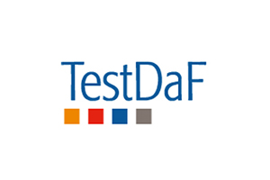
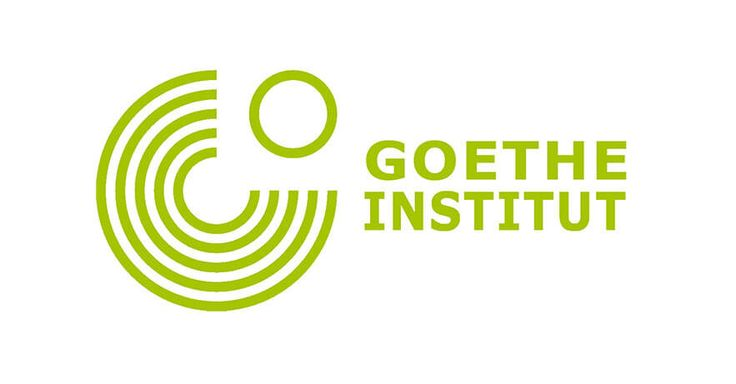
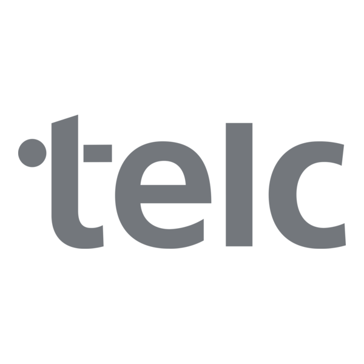

Экзамены по немецкому языку
Сравнение экзаменов
| TestDaF | Goethe-Zertifikat | telc | |
|---|---|---|---|
| Уровни | B2–C1 | A1–C2 | A1–C2 |
| Для чего нужен | учёба в Германии | виза, работа, учёба | работа, переезд |
| Срок действия | бессрочно | бессрочно | бессрочно |
Сертификаты действуют бессрочно, но многие вузы и посольства просят сертификат не старше 1–2 лет.
TestDaF

TestDaF (Test Deutsch als Fremdsprache) нужен в первую очередь для поступления в немецкие университеты. Это один экзамен для всех, а результат показывает уровень. Каждая из четырёх частей (чтение, аудирование, письмо, говорение) оценивается отдельно: TDN 3, TDN 4 или TDN 5. Это примерно уровни от B2 до C1.
Для поступления почти на все специальности нужно получить TDN 4 во всех частях. Регистрация проходит только онлайн на сайте TestDaF. В Германии экзамен стоит около 210 евро, в других странах может быть дешевле.
Goethe-Zertifikat

Экзамены Гёте-Института есть на все уровни от A1 до C2, для каждого уровня отдельный экзамен. Самый популярный – Start Deutsch 1 (A1), его часто требуют для визы по воссоединению семьи. Экзамен сдан, если набрано не меньше 60% баллов.
Начиная с уровня B1 экзамен модульный: если не сдал одну часть, можно пересдать только её. Стоимость зависит от страны и уровня.
telc

telc – это экзамены с практическими заданиями из повседневной жизни и работы. Их часто принимают для рабочих виз и в ведомствах Германии. Есть комбинированные экзамены, например A2·B1: если до B1 не хватило баллов, всё равно дают сертификат A2. Также есть telc C1 Hochschule для поступления в вуз и отдельные экзамены для медиков.
В России центров telc нет, сдавать его нужно за границей.